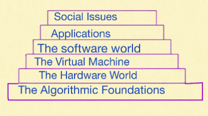

Computer science is a fascinating and multifaceted field that goes far beyond the tools and devices it employs. As computer scientists Michael R. Fellows and Ian Parberry aptly stated in an article for Computing Research News:
"Computer Science is no more about computers than astronomy is about telescopes, biology is about microscopes, or chemistry is about beakers and test tubes. Science is not about tools. It is about how we use them and what we find out when we do."
So, what exactly is computer science? Among the many definitions, one that best captures the depth and breadth of the field comes from Professors Norman Gibbs and Allen Tucker. According to them, the central concept of computer science is the algorithm
To fully appreciate this definition, it's essential to understand what an algorithm is. The dictionary defines an algorithm as:
"A procedure for solving a mathematical problem in a finite number of steps that frequently involves repetition of an operation; broadly, a step-by-step method for accomplishing some task."In simpler terms, an algorithm is an ordered sequence of instructions guaranteed to solve a specific problem. Algorithms aren’t just theoretical constructs—they are everywhere in our daily lives. For instance, can you think of examples of algorithms you use in real life, such as following a recipe, navigating with a map, or sorting items in order?

We will talk about each level of this pyramid during this semester.